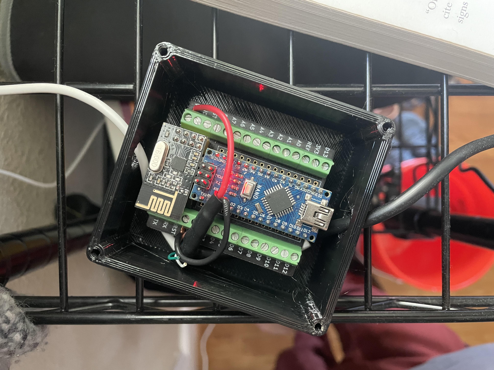
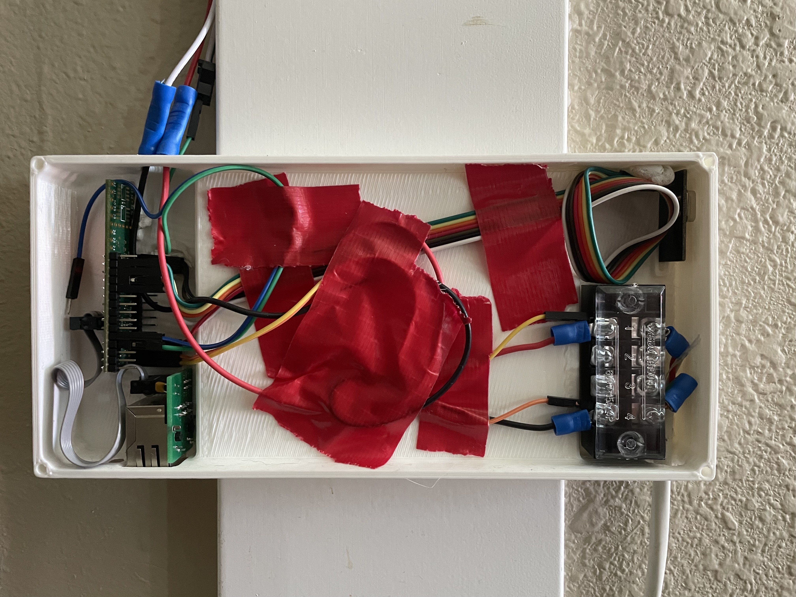
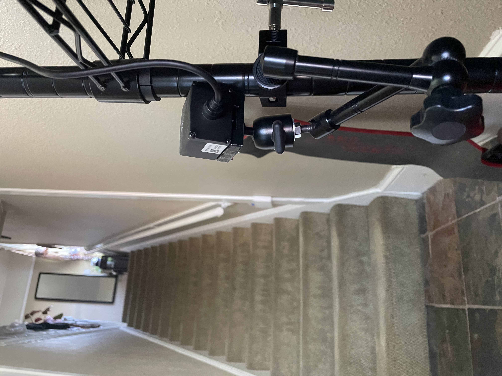
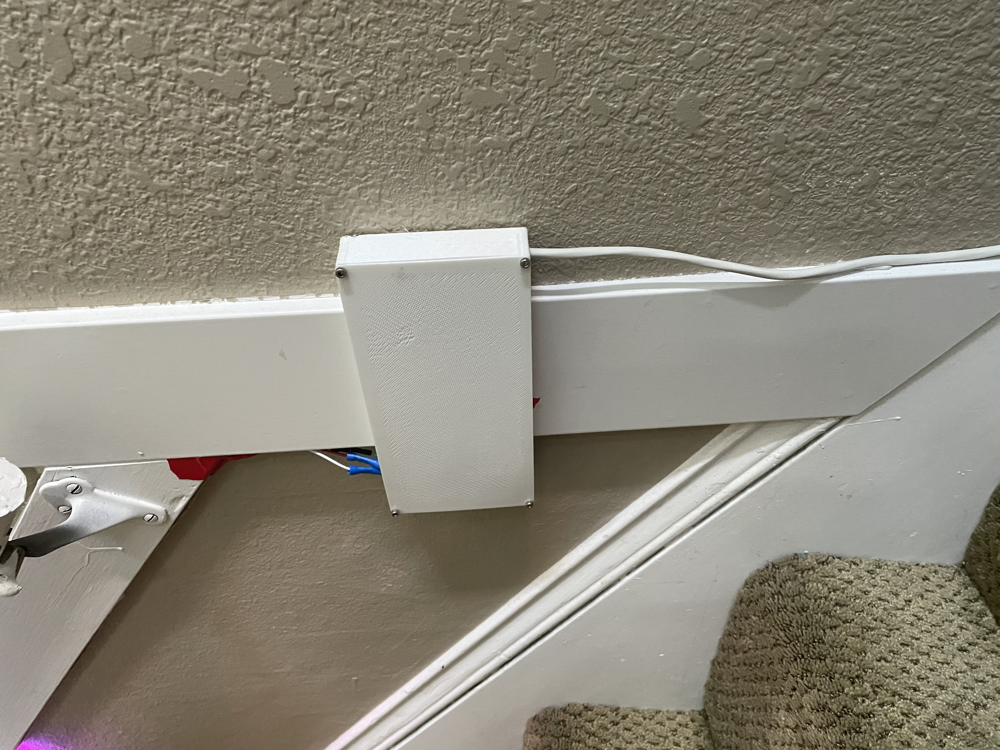

Companion Stairlight
I created a sensor-driven WS2812B led strip that illuminates the occupied section of stairway.
Background and Motivation
This project was born of frustration. Our very old, strangely wired house has the stairwell light switch at the bottom of the stairs. Late at night, that meant walking down in the dark, turning on the light, doing the thing, then turning it off and heading back up in darkness again. Usually with full arms, which meant putting everything down just to flip a switch. It was a pain, so I built a stair light that follows you automatically.
Execution
I had an old TFL03 lensed infrared rangefinder from a previous project.
This sensor claims lidar, but it’s not actually a laser light source. Still, it has centimeter level resolution at a range of 160 meters. Huge overkill for the application, but the rangefinding component of this project is pretty sensor agnostic.
{kind=link}

The enclosure held a radio transciever, but I also included a native ethernet module with a teensy 4.1 which, again, is huge overkill for the simple stair project, but I wanted this solution to be a building block for larger and more complicated light installations.
{kind=link}

{kind=link}

The rangefinder reports readings over UART, which I used a arduino nano with a 2.4GHz radio chip to communicate with the led microcontroller. The gap was only a few feet, but I didn’t want any extra wires dragging on the floor between the sensor and stairs.
I 3d printed a low-profile enclosure that was light enough to be mounted with sticky putty. I’m a renter, so I wanted to avoid drilling any holes I didn’t have to.
{kind=link}
